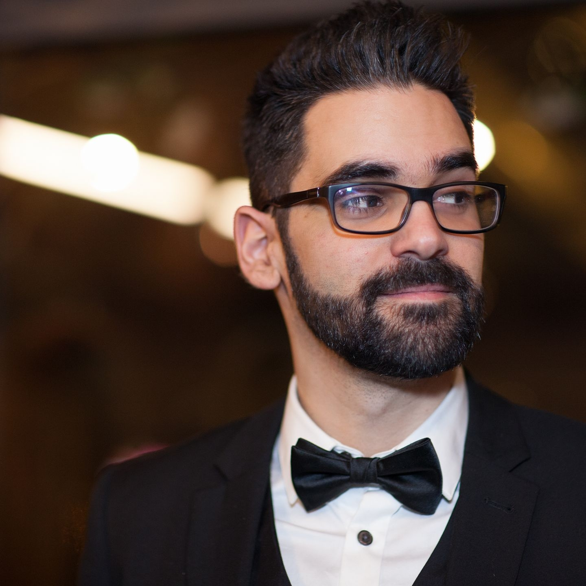

Données
Adriano Campisi
Né le 29-09-1987 à Liège
Téléphone : 0495/50.32.04
Adresse mail : campisi.ad@gmail.com
Adriano Campisi
Né le 29-09-1987 à Liège
Téléphone : 0495/50.32.04
Adresse mail : campisi.ad@gmail.com
05/10/2020
Préparateur de commande chez ECHub
03/07/2017 - 21/07/2017
Support technique et réseau et Helpdesk chez TNT Bierset (intérim) dans le cadre de la crise informatique (virus Petya)
06/2017
Stage formatif chez TNT Bierset (assistance de l’équipe du support technique et réseau, installation et maintenance des différents postes)
06/2016 - 02/2017
Différents labos physiques réalisés dans le cadre de ma formation à Technifutur® (Access Lists, NAT, VLAN, OSPF, DHCP, RIP)
04/2016 - 06/2016
Réassortisseur au Cash Converters, Seraing
11/2014 - 02/2015
Caissier - réassortisseur au Proxy Delhaize, Jupille
10/2013 - 03/2014
Commercial chez Ergo, Liège
08/2011 - 10/2012
Caissier - réassortisseur chez Primark, Médiacité
09/2018 - 06/2020
Reprise d’un Bachelier en informatique de gestion, HELMo Guillemins
06/2016 - 02/2017
Formation Network Specialist à Technifutur®, Liège avec Cefora et Talenteo
09/2014 - 04/2016
Formation Conseiller financier à IFAPME, Liège
2010 - 2012
Formation en Infographie à IFAPME, Liège
2009 - 2010
Première année Infographie à l’INPRES, Seraing
2008 - 2009
Première année Publicité à St Luc, Liège
2008
Obtention du CESS, Technicien en Infographie à l’Institut Marie-Thérèse, Liège
- Java Eclipse
- Bonnes bases en langage JAVA
- Bases en langage SQL
- Bases en UML
- Bases en HTML, CSS
- Packet Tracer
- Putty
- Bonnes bases en réseau (VLAN, WAN, DNS, WLAN, EIGRP, STP, VTP, VPN, BGP, OSPF, RIP, ACL, NAT, DHCP, HSRP, QoS) et en composants informatiques
- Bonnes bases sur VMWare
- Très bonnes connaissances de la suite Adobe (Photoshop, Illustrator, InDesign)
- Bonne connaissance de Microsoft Office
- Français : langue maternelle
- Italien : langue maternelle
- Anglais : conversation aisée, bonne compréhension, bonne connaissance de l’anglais technique
Dynamisme, créativité, sociabilité, esprit d’équipe, bonne humeur.
Informatique (réseau, hardware, software), sport (arts martiaux), musique, cinéma, art, dessin.